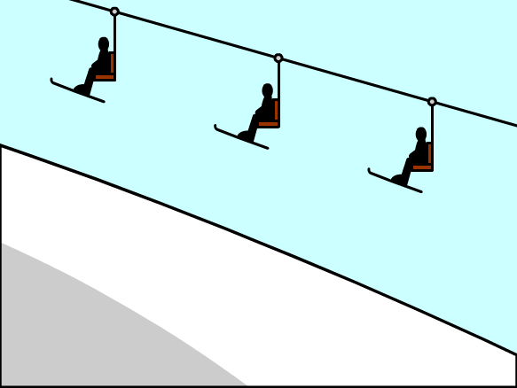
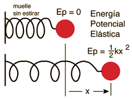

La energía potencial es un tipo de energía mecánica que está asociada con la relación entre un cuerpo y un campo o sistema de fuerzas externo (si el objeto está ubicado en el campo) o interno (si el campo está dentro del objeto). Se trata de energía en potencia, es decir, que puede ser transformada inmediatamente en otras formas de energía, como la cinética, por ejemplo. La energía potencial de un sistema, sea cual sea su origen, representa la energía “almacenada” en él dada su configuración o su posición y, por lo tanto, para medirla deberá tomarse en cuenta un punto o configuración de referencia. El concepto de energía potencial es útil para sistemas físicos tanto conservativos (que tienden a preservar la energía) como disipativos (que tienden a perderla). La energía potencial y la energía cinética de un sistema constituyen su energía mecánica. Este tipo de energía es estudiada no solo por la mecánica clásica, sino también la mecánica relativista y la física cuántica (que lo aplica a sistemas de partículas). La energía potencial se clasifica de acuerdo a las fuerzas que le dan origen, como pueden ser la gravitatoria, elástica, química, entre otras.
La energía potencial gravitatoria se define como la energía que posee un cuerpo masivo al estar inmerso en un campo gravitatorio. Los campos gravitatorios se crean alrededor de objetos con masas muy grandes (por ejemplo, masas de los planetas y el Sol). Por ejemplo, un vagón de una montaña rusa posee una energía potencial máxima en su posición de más alta debido a estar inmerso en el campo gravitatorio de la Tierra. Una vez que el vagón se deja caer, perdiendo altura, la energía potencial se transforma en energía cinética..

La energía potencial elástica tiene que ver con la propiedad de la elasticidad de la materia, que es la tendencia a recuperar su forma original luego de haber sido sometida a fuerzas deformantes superiores a su resistencia. Un claro ejemplo de energía elástica es la que posee un resorte que se estira o contrae por efecto de una fuerza externa y retoma su posición original una vez que esa fuerza deja de aplicarse. Otro ejemplo es el sistema de arco y flecha, en el que la energía potencial elástica alcanza su máximo valor a medida que el arco se tensa al tirar de la fibra elástica, doblando levemente la madera, pero con velocidad cero todavía. En el instante siguiente, la energía potencial deviene en cinética y la flecha es arrojada a toda velocidad hacia el frente.
La energía potencial química es la energía almacenada en los enlaces químicos de los átomos y moléculas. Un ejemplo es la glucosa en nuestro cuerpo, que almacena energía potencial química que nuestro cuerpo (por medio de un proceso que se llama metabolismo) transforma en energía calórica para mantener la temperatura corporal. Lo mismo ocurre con el combustible fósil (hidrocarburos) en el tanque de gasolina de un automóvil. La energía potencial química almacenada en los enlaces químicos de la gasolina se convierte en energía mecánica para echar a andar el vehículo.
| |
|